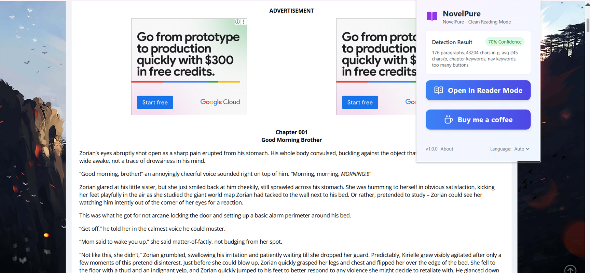

See the Difference
From cluttered pages to immersive reading.
从杂乱页面到沉浸阅读体验

BEFORE
Messy Layout / 页面杂乱

AFTER
Pure Reading Mode / 纯净阅读模式
NovelPure removes distractions and keeps only what matters — your story.
自动移除干扰元素，只保留最重要的内容——故事本身。